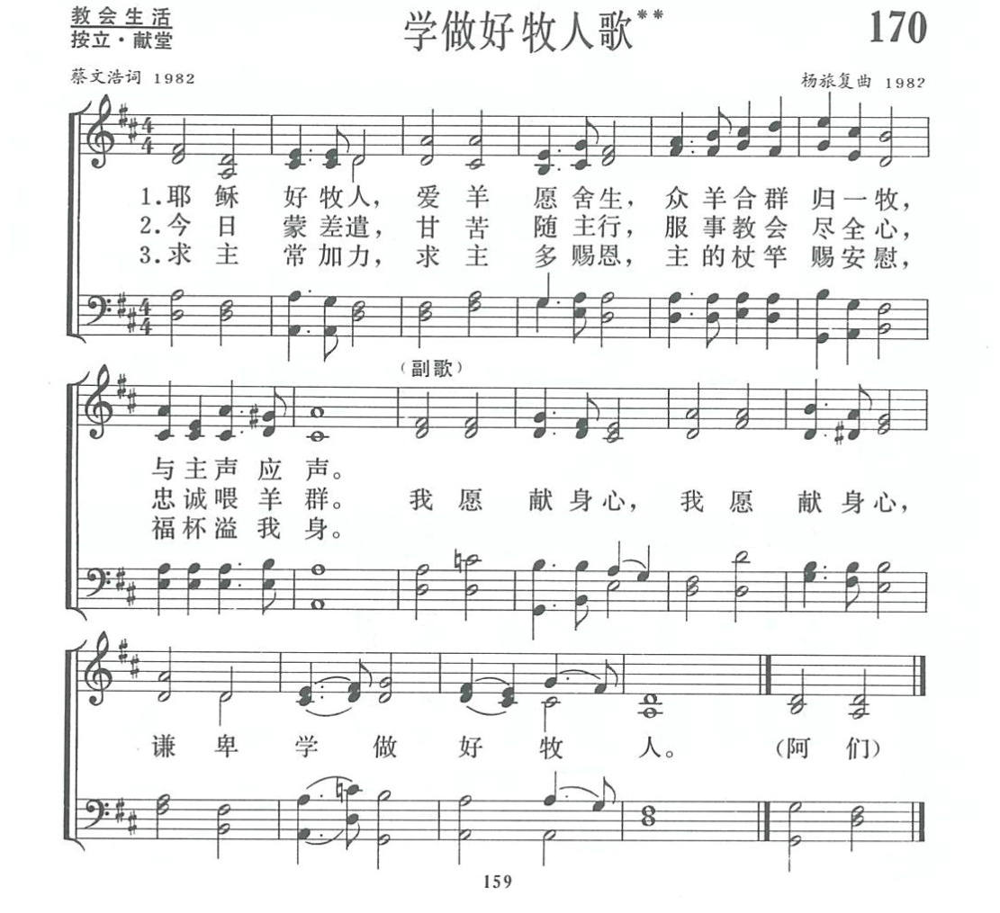

|
|
讚美詩(新編) 第170首《學做好牧人歌》 |
|
|
|
|
https://www.zanmeishige.com/tab/13843.html?songbook=1&index=170
 |
|
|
|
|

https://www.youtube.com/watch?v=TlcFUt5O5LQ
第170首 学做好牧人歌** _蔡文浩 LEARN TO BE A GOOD SHEPHERD
经文：“约翰的儿子西门，你爱我吗?......你牧养我的羊”(约21：16)。
自从1979年教会恢复工作以来，面临的难题之一便是缺少牧师。为此，各省市基督教协会都很重视推荐合格的传道人受牧师圣职。《新编》编辑部的同工们考虑到，在庄严的按立牧师典礼中，很需要一首合用的诗歌，便约请蔡文浩牧师、杨旅复同工夫妇(他们的简略参阅第11O首)合作一首。
蔡文浩在谈到他创作这首诗的构思时这样说：“我用‘学做好牧人’作为歌题，因‘牧师’是教会中的一种圣职。但‘牧人’的含义更广，包括教会中牧养信徒的所有人员—牧师、长老、传道以及当前在教会聚会点中负责讲道、看顾群羊的义工人员。
我希望这首诗不仅在按立牧师时唱，也能在传道人聚会中、义工培训中以及平时礼拜中唱，用以激励担任牧养工作的人，都能学习主耶稣，做个好牧人。”
全诗分三节。
第一节把主是好牧人的形像放在我们面前：为羊舍命，羊也认识牧人，与他声声相应(约1O：11一16)；
第二节是以彼得、保罗等使徒爱主爱教会的榜样，激发我们忠心服事羊群的心愿；
第三节以诗篇第23篇的话提醒我们，要做一个好牧人，自己先要做一只靠主杖竿带领、紧跟主行走的羊才能得到恩惠与力量。
这就落实到副歌中“谦卑奉献”的含义。有人对这首诗体会道：“这诗的特点不是炽热的语言或号召性的文字，而是温顺、委婉、朴实的感情的流露。‘好牧人’是要谦卑地学着去做的，所以全歌的最后一句是它的核心。”
杨旅复在为这首诗谱曲时，根据歌词的含意，尽量表达简朴、诚恳的情绪，同时使曲调悦耳而又易学易唱。当歌词介绍“好牧人”的形像时曲调由平铺逐渐发展，趋向高潮。
副歌中是重复句，音乐原型是一样的，但第二句比第一句高三度，体现出奉献身心的虔敬与诚恳态度。最后一句趋于平稳的结尾，也是为了刻划“学做好牧人”的谦卑心情。
这首诗发表后，果然实现了作者的期望，不仅在按立牧师典礼中可用，在农村义工培训班等各种场合里也同样可唱。